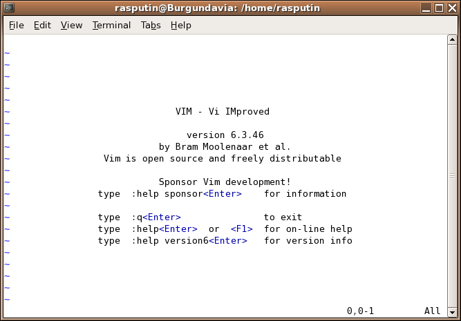

El mejor editor de texto de todo el mundo mundial
Ayer asistí a ver unas charlas del grupo de lenguajes dinámicos, mi interés principal era ver la presentación de mi amigo Aldrin Martoq y su proyecto (o proyectos), de impacto mundial, Brayatan Azicalao (pa' las nenas).
Me gustó mucho el ambiente del meetup y es agradable ver que hay muchos hackers que se juntan en nuestro país para compartir conocimiento. La mayoría de los asistentes son gente bastante menor que yo, así que hay un gap generacional que sospecho es de unos 15 años aproximadamente, lo que es muy interesante. No puedo evitar considerar en que estaba yo a la edad de los asistentes a estos meetup, es decir, que estaba haciendo yo hace quince años. Supongo que tenía esa misma actitud, y estoy seguro que si hubieran existido los meetups en esos tiempos habría asistido a varios, lo único que teníamos eran las fiestas de #irc, pero esas son otras historias que no se pueden contar en horario para todo espectador.
Pero, ¿en que estaba? Ah, sí, el meetup. En otra ocasión voy a hablar del proyecto de Aldrin, lo que me interesa contar ahora tiene que ver con una charla previa que dió Jano González sobre VIM (VIM FTW).
Para los que son de mi generación VIM es Vi IMproved, una nueva encarnación del segundo mejor editor del mundo: VI.

Eran fines de la década de los 1980 y durante unas vacaciones de invierno algunos amigos y yo, en vez de ir a meetups, asistíamos durante las mañanas de esas dos semanas a clases de Unix y administración de sistemas dictadas nada más y nada menos que por Patricio Poblete y Juan Alvarez. La idea era formar el grupo de sysadmins del DCC, para apoyar a los profesores, investigadores y dar soporte a nuestros usuarios.
Aprendimos lo básico de Unix System V, programación shell, sed, troff (sí troff, no había latex),y varias otras cosas, por supuesto aprendimos a usar vi (el segundo mejor editor del mundo). Así que tuve la suerte de aprender Unix con estos grandes próceres de internet en Chile.
Hoy aprender vi, o vim, es algo exótico para muchos desarrolladores. Casi todos trabajan con algún IDE, y los más curiosos o con inclinaciones de hacker dominan un editor de texto stand alone. Si usted es un programador serio debería saber usar un editor stand alone y tener la capacidad de compilar sus programas sin usar un IDE. Personalmente no me gustan mucho los IDEs, aunque reconozco su valor. Durante muchos años programé con Visual Studio, un IDE de lujo, y cuando volví a programar sobre plataforma Java probé con Eclipse y Netbeans, la que resulta una experiencia penosa después de haber usado Visual Studio, cuando tengo que usar un IDE hoy en día mi elección es IntellijIdea.
Pero volvamos a la charla de Jano, él está intentando usar vim en su trabajo diario. Hay una razón importante por la que conviene aprender a usar vi o alguna de sus variantes, como vim, y en viejas distros linux elvis. Vi está presente en prácticamente toda instalación de unix. Cuando uno tiene que acceder remotamente a un servidor unix (o linux) es muy probable que tenga a su disposición este editor. Pero es un editor muy poderoso, por algo es el segundo mejor editor del mundo.

Bill Joy co fundador de Sun MicroSystems, creador de Vi la leyenda dice que reescribió el kernel de BSD en un fin de semana
Otra razón por la que me gusta VI es porque conocí personalmente a su creador, Bill Joy.
Fue en esa misma época, en que aprendimos Unix y nuestros profesores nos preparaban como sysadmins que la Universidad de Chile adquiría unas modernas estaciones de trabajo Sun MicroSystems.
En ese tiempo este joven, Bill Joy ya se había convertido en millonario, y como buen millonario había decidido gastar su dinero conociendo exóticos lugares del mundo, y quiso venir a esquiar a Chile.
Resulta que los académicos de la Universidad de Chile y de la Universidad Católica decidieron invitarlo a dar una charla a sus alumnos, y ahí fue que conocí a Bill Joy, tuve la oportunidad de estrechar su mano, recuerdo que un amigo le pidió que le autografiara una copia de un CD (ignoro que tenía) y en ese momento nos animó a escribir software opensource que pensaba distribuir en cada máquina SUN. Esta fue la primera charla de emprendimiento a la que recuerdo haber asistido.
Vi era en realidad en modo visual de otro editor de lineas que se llamaba ex (ex y ed y otros editores de linea existen en muchos ambientes unix aún).
La idea en 1976 era revolucionaria, usar toda la pantalla para escribir texto. Antes uno escribía en la linea inferior de la pantalla y las instrucciones iban apareciendo en la parte superior, la pantalla emulaba una larga cinta de papel que de desplazaba hacia arriba. Porque en realidad había muchos computadores cuyos terminales no era pantallas, sino que verdaderos teletipos cono cintas de papel donde quedaban registrados los comandos.
Para que tengan una idea de como se operaba con ed, si tienen linux o mac escriban en una ventana de terminal lo siguiente:
ed
a
hola mundo
.
w hola.txt
11
q
Coloqué en negrita los comandos que ustedes deben ingresar, y en itálicas las respuestas del sistema, ed es el editor de lineas de unix. La letra a es un comando que significa append, es decir, agregar texto. Luego escribimos “hola mundo” y escribimos un punto como único caracter en la linea siguiente, esto termina el ingreso de texto. El comando “w hola.txt” escribe todo el texto en el archivo “hola.txt”, el programa nos responde con un número 11, que es la cantidad de bytes que grabó. Finalmente el comando q nos permite salir del editor de lineas.
Ah, y si quiero corregir o modificar el texto y cambiar “hola mundo” por “hola mundo mundial” es super simple:
ed hola.txt
11
p
hola mundo
s/$/ mundial/
p
hola mundo mundial wq
19\
Podrán apreciar que ed soporta expresiones regulares, y una serie de otros comandos sofisticados, los que por supuesto son leidos desde la entrada estándar y cuyo resultado es enviado a la salida estándar (si usted es un verdadero hacker comprenderá las implicaciones de la anterior frase).
Lo interesante es que Bill Joy contaba que cuando tenía que usar un editor en un ambiente desconocido prefería usar ed, porque su comportamiento era estable, habían tantos clones y versiones de vi que no estaba seguro si este editor se comportaría como el original que él había escrito.
Esto es una forma horrible de escribir programas, pero era la manera en que se hacía antes, después de abandonar el uso de tarjetas perforadas.
Lo notable es que Unix y C fueron escritos usando ed porque era el editor que Ken Thompson escribió en 1971. Y es por esta razón que ed es el mejor editor de texto del mundo mundial.

Ken y Dennis trabajando en una PDP-7